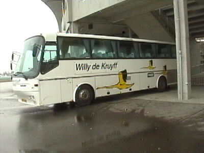
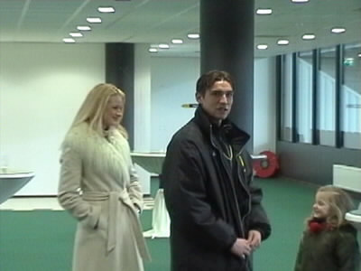
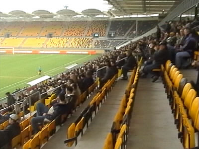
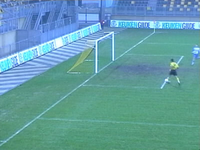
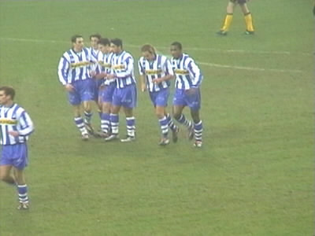
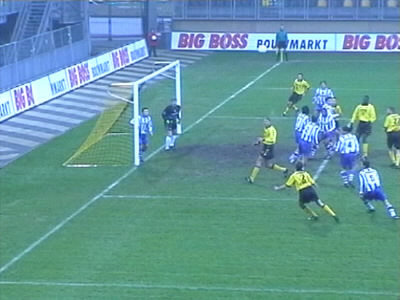
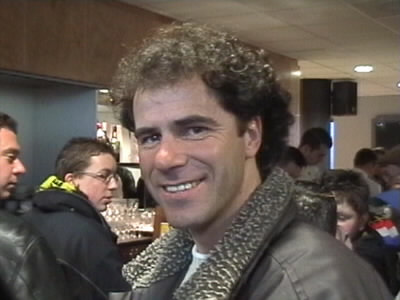
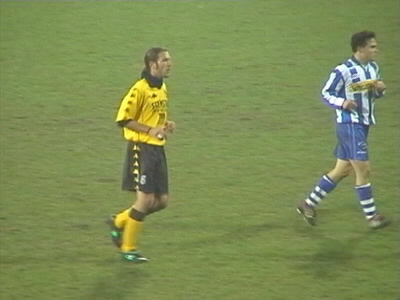

Roda JC - Eindhoven (1-2) 20 januari 2001
Roda JC - Eindhoven (1-2) 20 januari 2001

De spelersbus van Eindhoven.

Kevin van Dessel die niet op de spelerslijst stond met vriendin (links).

Er werd vandaag slechts op noord publiek toegelaten.

Anastasiou kan simpel de 1-0 binnentikken.

Ties Konings heeft zojuist de gelijkmaker gescoord.

Spelmoment.

Peter Bosz (ex-Feyenoord) "slechts op bezoek".

This one goes out especially to the fans from down under....
©KPD